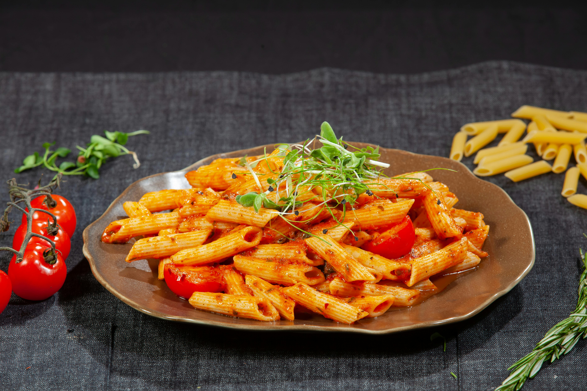

Pasta Recipe

Description
Pasta is the ultimate springtime dish, offering a delightful way to embrace the fresh and vibrant flavors of the season. It serves as a perfect canvas for incorporating an array of colorful, seasonal vegetables like asparagus, peas, cherry tomatoes, and zucchini. These vegetables add a burst of freshness, crisp texture, and nutritional value to the dish.To complement the lightness of the spring produce, the pasta is gently coated in a simple yet elegant sauce made from lemon and butter. The lemon brings a zesty brightness that enhances the natural flavors of the vegetables, while the butter adds a smooth, velvety richness to the dish. Together, the combination creates a harmonious balance of flavors, making it a refreshing and satisfying meal for the warmer months.
Ingredients
- 8 oz. penne pasta
- 2 Tbsp olive oil
- 1 zucchini
- 1 yellow squash
- 1 carrot
- 1/2 red onion
- 1/2 cup frozen peas
- 1 cup grape tomatoes
- 3 cloves garlic, minced
- 1/2 cup grated Parmesan
- 1 tsp dried oregano
- 1/2 tsp salt
- 1/2 tsp Freshly cracked black pepper
- 2 Tbsp Fresh lemon juice
- 2 Tbsp butter
Steps to make this dish
- Start by prepping your vegetables. Wash the vegetables, then cut and slice each vegetable into equal size pieces. Cut the zucchini and yellow squash into half moons, slice the carrots into thin rounds, cut the grape tomatoes in half and slice the red onion into strips.
- Next bring a large pot of salted water to a boil. Cook the pasta according to the package instructions, or until al dente. Reserve some of the starchy pasta water before draining the pasta in a colander.
- While the pasta is boiling, saute the vegetables. In a large deep skillet add olive oil and saute carrots and onion over medium heat for 1-2 minutes. Next add zucchini and yellow squash and saute for an additional 1-2 minutes.
- Next add the minced garlic, grape tomatoes and frozen peas. Season the vegetables with salt, pepper and dried oregano. Saute for an additional 1-2 minutes, then turn the heat off.
- Add the butter to the skillet along with the fresh squeezed lemon juice and stir well to combine. Either add the cooked and drained pasta to the skillet, or transfer the pasta and vegetables to a large bowl. Add grated parmesan cheese and some of the reserved pasta water. Stir the vegetables with the pasta until well combined. Serve with fresh chopped parsley (optional garnish) and enjoy!